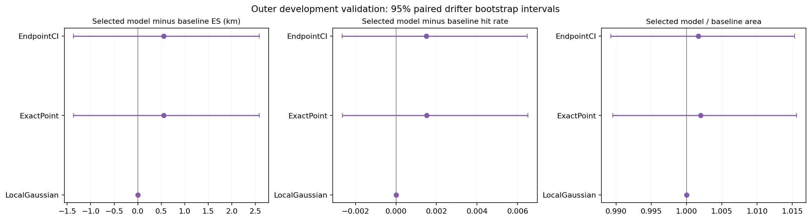
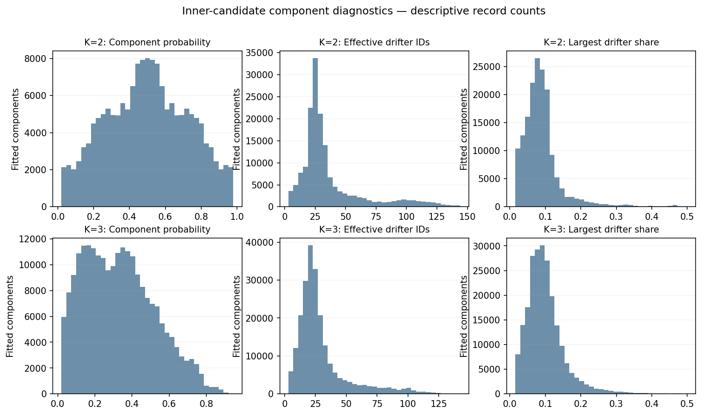
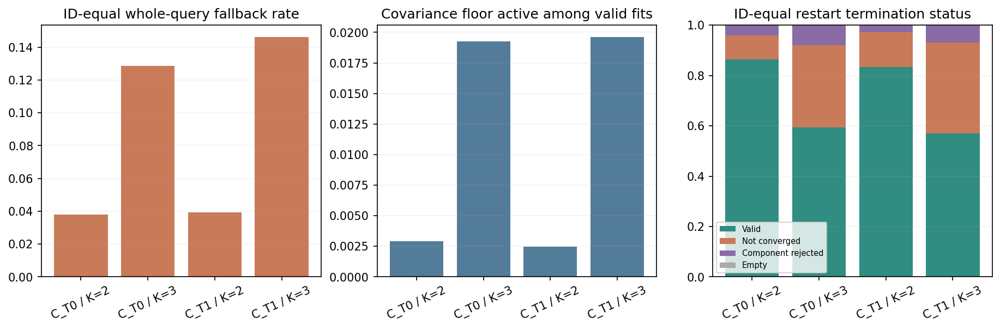
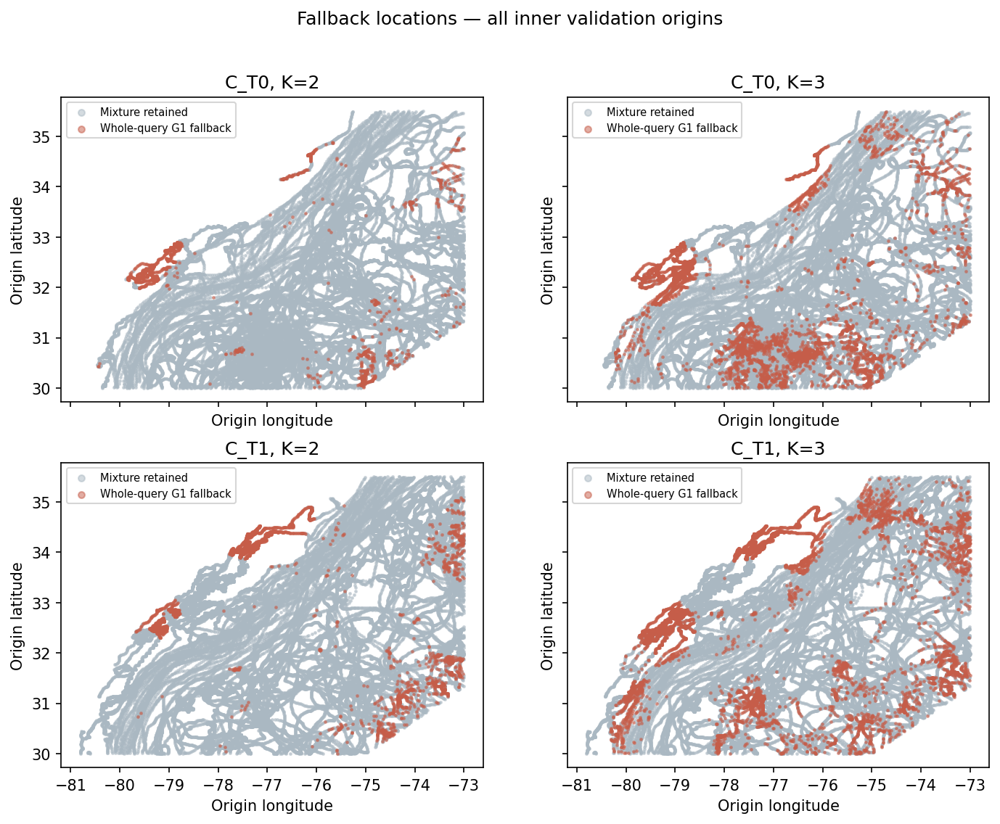
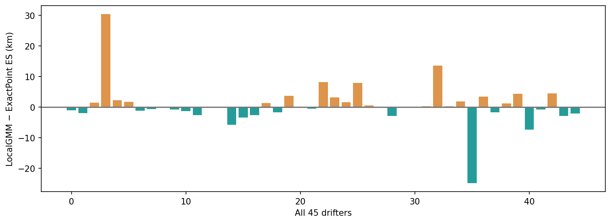
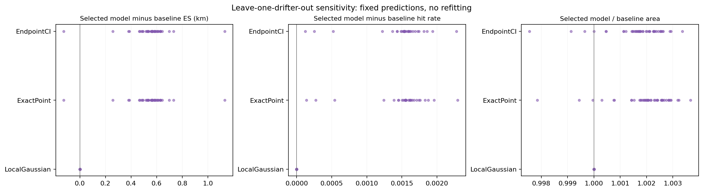
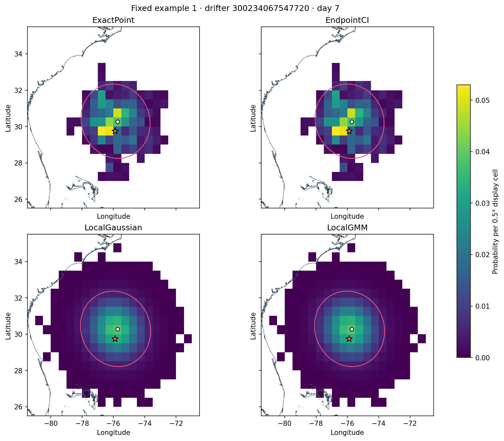
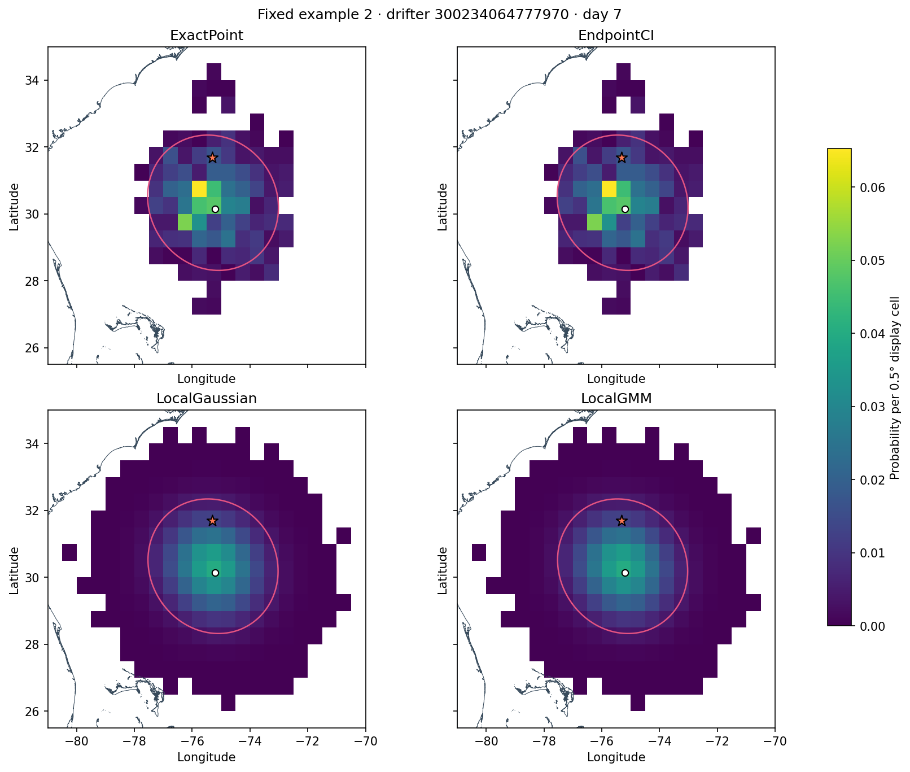
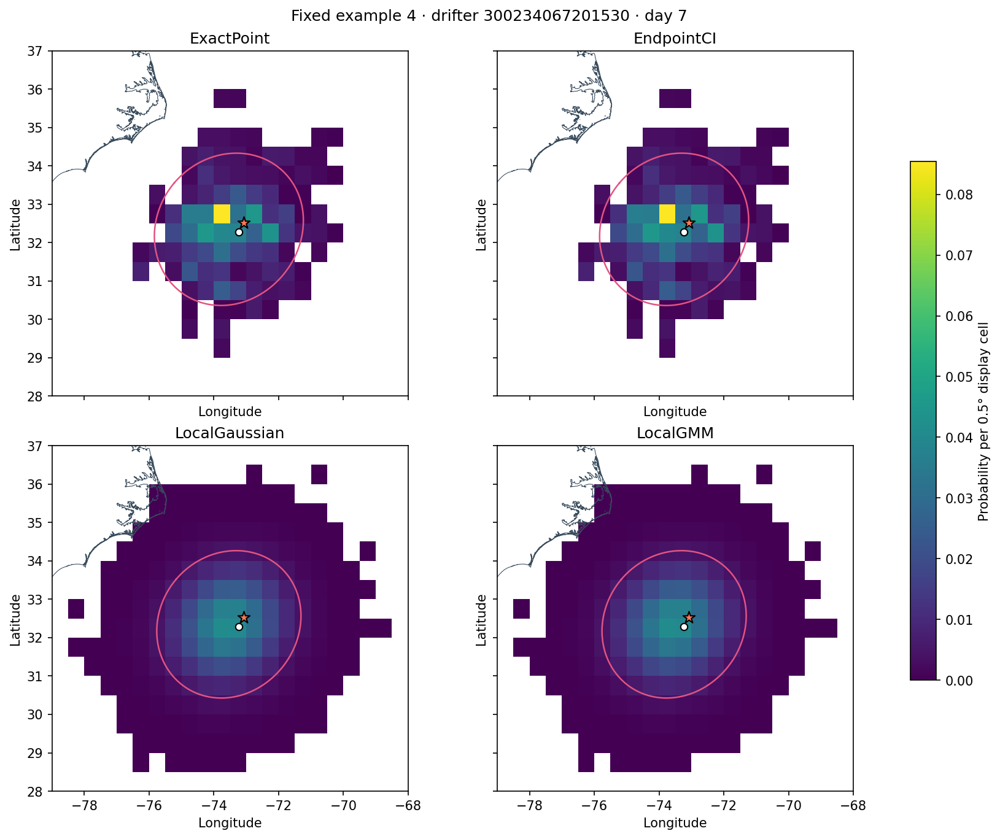
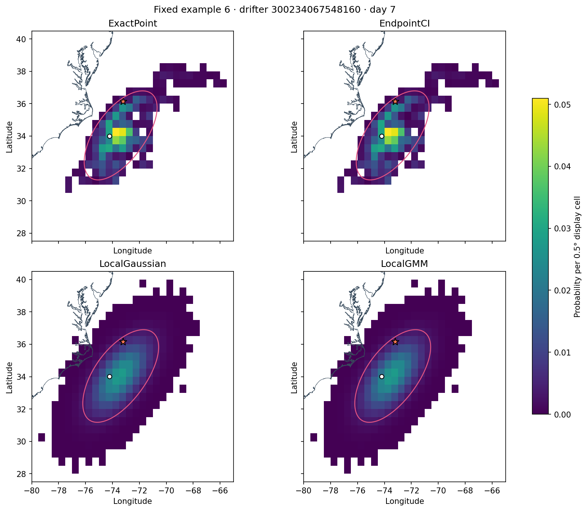

Step 5 E2 · 局部高斯混合完整实验
最终 K=1；未达到合同中的质量不退化改善标准。
全部 86,373 个内层起点及 33,971 个外层起点；外层 45 条 drifter 等权。七天预测、完整近邻、原始终点及训练配对权重保持不变。未使用 MDN，未读取最终测试集。
本轮结论
K=2 在内部验证中将平均 ES 从 171.329 降至 170.562 km（约 0.45%），但两个时间窗口的实际命中率分别下降 0.081、0.306 个百分点。按预先锁定的“不下降”要求，最终回到 K=1；K=3 因回退率超过 5% 未获晋级资格。
因此，外层的 LocalGMM 与 LocalGaussian 是同一个模型。相较 ExactPoint，ES 点估计约高 0.41%，命中率高约 0.152 个百分点，面积大约 0.20%；未达到质量不退化的改善标准。这不是证明多峰分布没有价值，而是本轮定义与验收规则没有支持采用多成分。
完整训练与独立复核已完成。报告生成阶段的类型与启动衔接问题已恢复；模型、所有样本、训练权重、评分精度及验收门槛均未改变。
1. 训练期如何选择 K
最佳 ES 候选 K=2；一倍标准误规则暂选 K=2；质量约束后最终 K=1。回退列为 drifter 等权比例。两个窗口及跨窗口汇总遵守合同中的 ID 等权规则。
K=1 时 LocalGMM 与 LocalGaussian 是同一个分布。这表示本轮选择规则没有支持增加成分，不能据此证明海洋落点单峰；K 也不等于真实洋流分支的数量。
完整冻结选择记录
2. 四组七天预测结果

ES 单位为 km，越低越好；h90 为比例；面积单位为 km²。90% 区域统一为各自完整分布的单个分位椭圆，可能包含多峰之间的低密度地带。

区间来自 10,000 次整条 drifter 配对重抽。主比较为 GMM 对单高斯，然后是 ExactPoint、EndpointCI；验收要求 ES 改善及命中、面积和地理质量约束同时满足。
3. 组件支撑、协方差与回退
外层 GMM 的 drifter 等权回退比例：0.000%；查询回退比例：0.000%。EndpointCI 中 error 不可用、保留为原始点的质量：6.213%。
以下诊断展示完整内层 K=2、3 候选；直方图为拟合组件记录数，仅用于描述，不参与验收。回退位置图展示所有起点。



五次重启均未通过预先定义的支撑或收敛要求时，整个查询按合同退回 G1；所有这些查询保留在评分中。终止状态图区分未收敛和组件约束不通过；两类问题可能同时存在，图中显示程序记录的终止状态，不将回退直接解释为真实分布单峰。
4. 是否被个别 drifter 主导


每个点省略一条 drifter 后重新汇总固定预测结果；没有重新训练，也不以此追加选择模型。
5. 六个预先固定的示例
白点为起点、星号为七天后记录位置、红线为90%椭圆。每例四组共用范围和色标；0.5° cell 仅用于展示。





